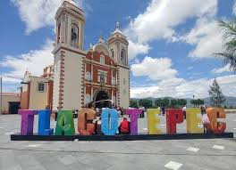

Presentación
Esta página web fue creada con el motivo de que conozcas los lugares de Tlacotepec, como escuelas, parques e iglesias que hay en este maravilloso municipio.
Lugares que encontrarás:
- CECyTE
- Iglesia
- PABSA
- Parque
- Reyes

Tlacotepec
Tlacotepec de Benito Juárez, ubicado en el sureste del estado de Puebla, México, tiene una historia rica y diversa reflejada en su desarrollo cultural y social. El nombre “Tlacotepec” proviene del náhuatl y significa “En la mitad del cerro”.
La región ha estado habitada desde aproximadamente el año 1300 a.C., y para el siglo XV d.C., Tlacotepec ya era un asentamiento importante. Durante este periodo, la localidad fue tributaria de Tenochtitlán, manteniendo relaciones comerciales y culturales con los mexicas.